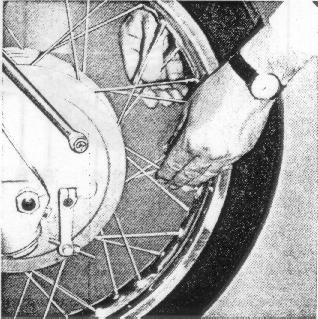

The
Wheel spokes
must be checked for uniform tension every 6000 miles.
Clean
brakes,
brake drums, brake shoes and brake linings (minimum thickness 0.06")
and check brake cams and actuating parts
Grease brake cams lightly.
Do not emery the shiny film on the brake linings,
do not bevel the linings.
These operations should be performed only by an
authorized BMW Dealer
Figure 52
52
